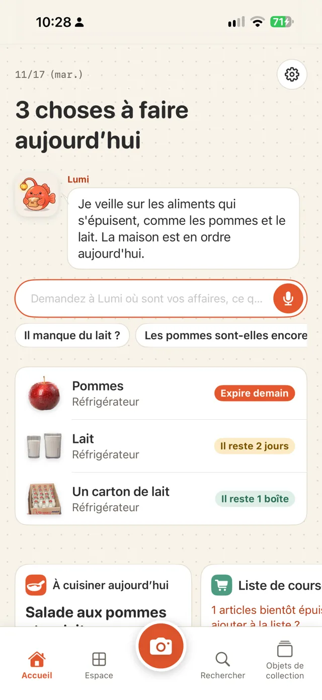
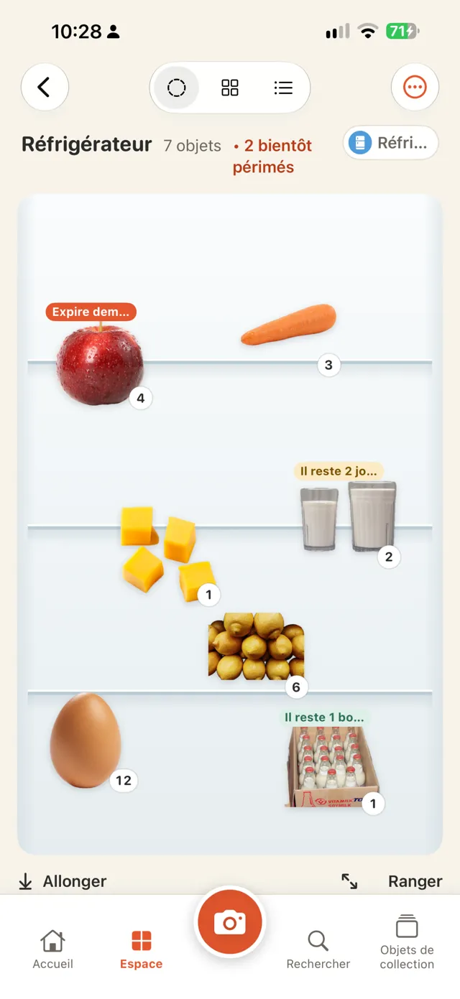
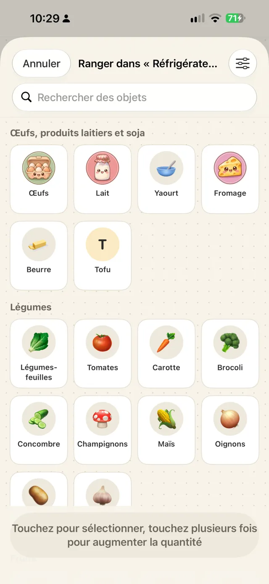
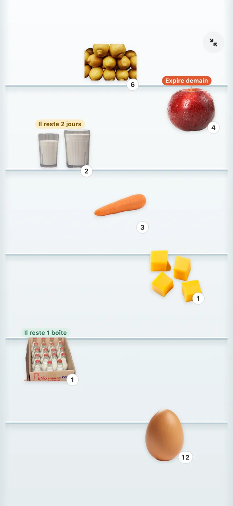
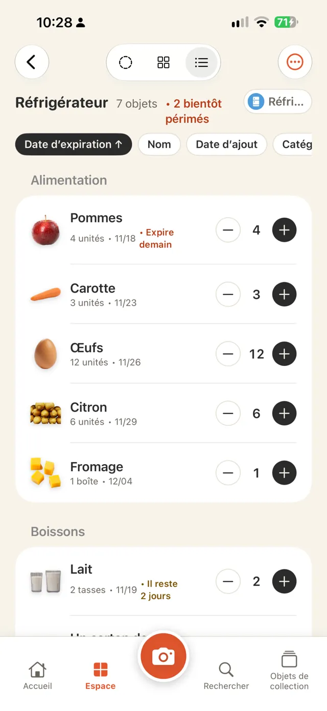
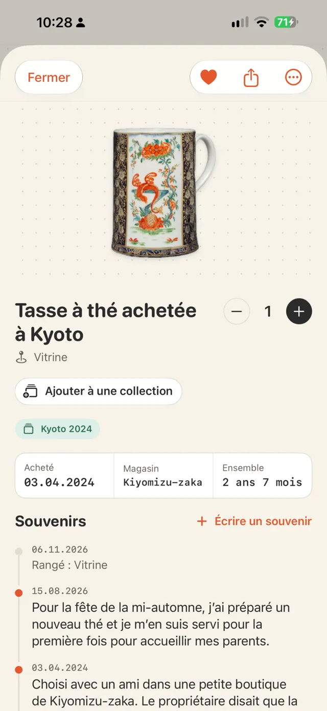
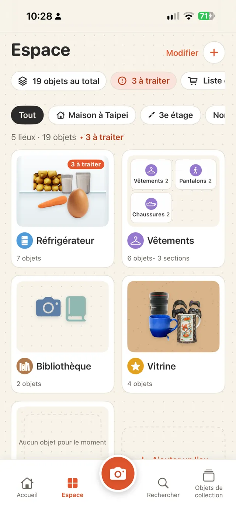
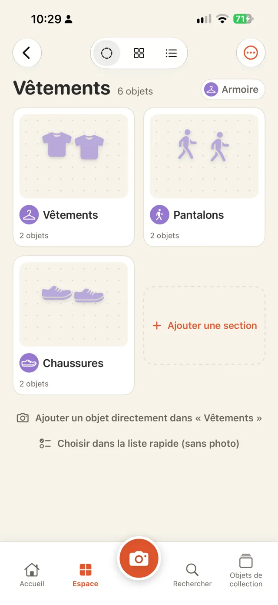
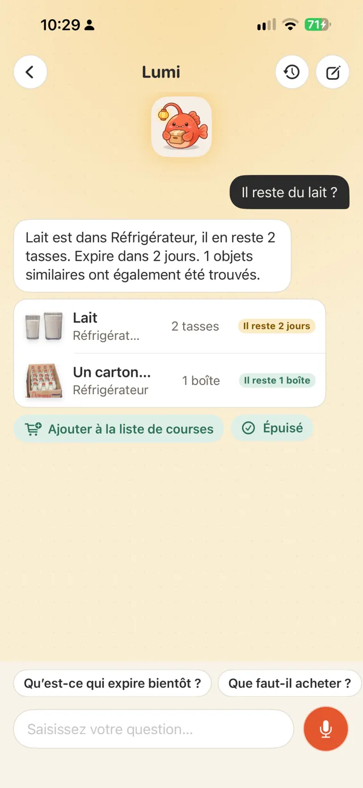
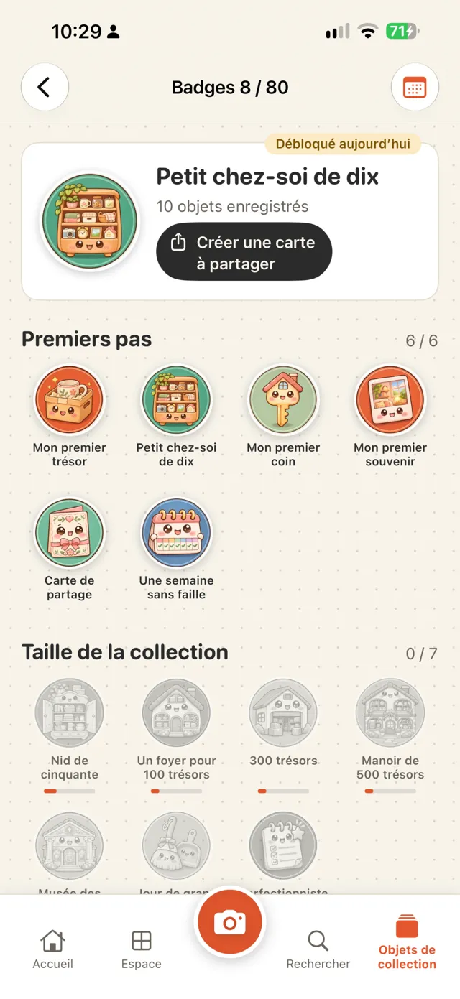

Inventaire de la maison et souvenirs sur iPhone
Une photo, et c'est rangé.
Une recherche, et c'est retrouvé.
Le lait du réfrigérateur, le papier toilette du placard, les livres de la bibliothèque, la tasse rapportée d'un voyage. Prenez une photo. L'emplacement, la quantité restante et la date de péremption restent sur votre téléphone.
Télécharger sur l'App Store- ✓ Téléchargement gratuit, 3 emplacements gratuits
- ✓ Pas de compte
- ✓ Données conservées sur votre iPhone

Ajouter
Une photo, détourée et enregistrée
Pointez l'appareil vers un objet et appuyez sur le déclencheur : l'arrière-plan est supprimé automatiquement. Le même appareil photo lit aussi les codes-barres : les produits alimentaires sont recherchés sur Open Food Facts, les livres sur Open Library. Au retour des courses, le scan continu enregistre une douzaine d'articles d'un coup.

Liste rapide
Pas de photo, il suffit de cocher
Pour ce que vous achetez tout le temps, comme les œufs, le lait ou le papier absorbant, touchez l'article dans la liste rapide pour l'ajouter, touchez-le encore pour en ajouter d'autres : la date de péremption est remplie d'après la durée de conservation habituelle. Le réfrigérateur, le placard, la pharmacie et la penderie ont chacun leur liste ; vous pouvez ajouter ou retirer des entrées et les remplacer par vos propres photos.

Trois affichages
Vitrine, grille ou liste
La vitrine dispose les photos sur une porte de réfrigérateur, du papier pointillé ou un panneau de liège ; vous pouvez les déplacer et en changer la taille. La grille sert à chercher ; la liste sert à faire l'inventaire, avec des boutons plus et moins et un balayage pour marquer un article comme terminé.
Agrandir
Seulement le fond et les photos
Quand une vitrine est pleine, touchez Rallonger pour ajouter une page, puis faites défiler vers le bas. Agrandir masque le titre et les boutons pour que l'emplacement occupe tout l'écran ; vous pouvez toujours déplacer les photos, les redimensionner et en toucher une pour l'ouvrir.

Dates de péremption
Le téléphone lit la date sur l'emballage
Quand vous prenez la photo, la date de péremption imprimée sur l'emballage est lue et vous la confirmez. Une notification vous prévient quelques jours avant ; vous choisissez combien.

Souvenirs
Notez l'histoire de tout ce que vous gardez
Une tasse rapportée d'un voyage, un cadeau d'un ami : ajoutez des photos, une date, un lieu et quelques lignes. Regroupez-les en collections, par exemple « Kyoto 2024 ». La fonction « Ce jour-là » les fait revenir sur l'écran d'accueil.

Emplacements
Réfrigérateur, Placard 800, bibliothèque, ou le vôtre
Les modèles comprennent réfrigérateur, Placard 800 (un cellier où l'on peut entrer, d'environ 80 cm de profondeur), armoire, bibliothèque, penderie, étagère de collection, pharmacie et cartons de déménagement. Vous pouvez aussi choisir vous-même une icône et un nom. Regroupez les emplacements par logement ou par étage si vous le souhaitez.

Niveaux
Des emplacements dans les emplacements
Vêtements peut contenir Hauts, Pantalons et Chaussures, et sa carte indique les emplacements qu'il renferme. Pour en déplacer un, utilisez Déplacer dans… dans le menu, ou maintenez le doigt dessus et glissez-le sur une autre carte. Les catégories ont aussi des sous-catégories, comme Vêtements › Pantalons, choisies automatiquement à l'enregistrement.

Demander à Lumi
Introuvable ? Demandez
Sur l'écran d'accueil, demandez à la mascotte Lumi « où est mon passeport » ou « reste-t-il du lait », en écrivant ou en maintenant le doigt pour parler. Lumi répond en indiquant l'emplacement, la quantité restante et la date de péremption. La reconnaissance vocale se fait sur le téléphone dès qu'il en est capable, et l'app fonctionne sans IA en comparant les noms, les catégories et les emplacements.

Quand c'est utile
- Avant les courses, voir ce qu'il y a dans le réfrigérateur
- Cuisiner d'abord ce qui périme en premier
- Retrouver où sont les piles AA
- Se rappeler à qui on a prêté un livre
- Lister le contenu de chaque carton de déménagement
- Trier les souvenirs de voyage
- Vérifier si la pharmacie contient des produits périmés
À voir en 50 secondes
Le réfrigérateur passe d'un affichage à l'autre, les quantités changent, on regarde l'intérieur de Vêtements, on ouvre les souvenirs d'un objet, puis on demande à Lumi ce qui périme bientôt.
IA (facultative)
Tout fonctionne sans IA. Si vous en voulez une, il y a deux sources. Une fois l'IA activée, elle est appelée quand vous touchez un bouton IA, et une fois par jour pour la courte note de l'écran d'accueil.
Intégrée à Apple
Apple Intelligence sur votre iPhone : gratuite, hors ligne, les données ne quittent pas le téléphone. Nécessite un iPhone compatible et iOS 26 ou une version ultérieure.
Votre propre clé API
Gemini, Claude, DeepSeek et d'autres. La clé n'est conservée que dans le trousseau de cet iPhone, et les données vont directement au service que vous avez choisi, sans passer par nous.
- Nommer : reconnaît l'objet sur la photo et suggère une catégorie et une unité
- Regarder cet emplacement : quoi manger en premier dans le réfrigérateur, quoi racheter pour le placard, ce qui est périmé dans la pharmacie (aucun conseil médical)
- Chercher en une phrase : ajoute des synonymes, puis lance la recherche
- Mettre en forme un souvenir : transforme quelques mots en un paragraphe sans rien ajouter que vous n'ayez dit
Badges et cartes à partager
Trente jours sans aucun produit périmé dans le réfrigérateur vous valent le badge « Gardien du frigo ». Les badges, les histoires d'objets et le bilan de l'année peuvent être enregistrés sous forme d'images ; le lieu et le prix en sont exclus par défaut.

Détails
| Appareil | iPhone (iOS 18 ou version ultérieure) |
|---|---|
| Langues | English, 繁體中文, 简体中文, 日本語, 한국어, ไทย |
| Prix | Téléchargement gratuit (avec une bannière publicitaire, 3 emplacements, les 2 dernières conversations avec Lumi) ; Pro supprime les publicités et les deux limites : 1 $US par semaine, 3 $US par mois ou 5 $US en une seule fois |
| Compte | Inutile |
| Données | Uniquement sur cet iPhone, export au format CSV ; les éléments supprimés peuvent être restaurés pendant 30 jours |
| Réseau | Utilisé uniquement pour la recherche de codes-barres et le service d'IA que vous choisissez |
Limites
- Pas encore de synchronisation iCloud ni de partage familial
- Les produits absents des bases de codes-barres demandent un nom de votre part ; au prochain scan de ce code-barres, il sera repris
- Le détourage dépend de la photo ; en cas d'échec, la photo d'origine est utilisée
Vos données restent sur votre iPhone
- Pas de compte, pas de serveur
- La version gratuite n'affiche que des publicités non personnalisées, sans suivi
- L'appareil photo et la photothèque ne sont utilisés que lorsque vous les utilisez
Commencez par le réfrigérateur
Ouvrez Stashlight, choisissez Réfrigérateur et photographiez les trois produits que vous achetez le plus souvent.
Télécharger sur l'App Store